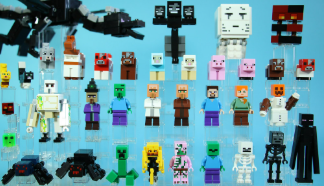
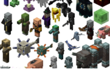

Zombies are a green monster that only come out in the night and they burn at the sight of sun, they can drop special things such as iron and even armor
Just like zombies skeletons burn in the day but they spawn at night, they have a powerful bow that can kill you very easily, their bows can be enchanted though and they have a chance of dropping the bow
The Ender Dragon is the final boss of minecraft, you must destroy the crystals so it cant heal, and then kill it. A good strategy to this is using beds as when you try to sleep in them they explode
Creepers are annoying, when you get close to them they explode, so if you want to counter this you can use a shield or use flint and steel to light it and then run away
The Wither requires 4 soul sand and 3 wither skeleton heads to make, the soul sand was the easy part. The main reason you would defeat the wither is for a beacon which requires the nether star

Minecraft mobs - CCO-Flickr-Attribution

Attribution 4.0, CCO- Roboflow Universe
Home Page
Biomes Page
Ores Page
Mobs Page
Tools Page